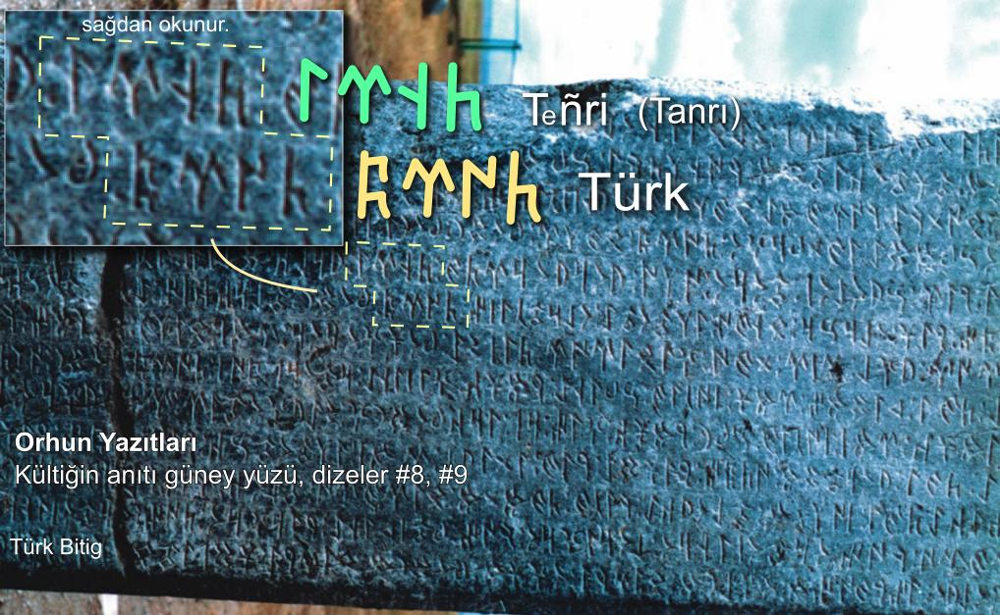

Göktürk Alfabesi
Göktürk Alfabesi Türk dilinin en eski yazı sistemidir. Sağdan sola doğru yazılır. 4 ünlü, 25 ünsüz ve 9 çift sesli olmak üzere toplam 38 harfden oluşur ve çoğu ünzüz harflerin kalın ve ince seslileri vardır. Orhun Yazıtları bu alfabe ile yazılmıştır.

Ünsüzlerin Kuralları
Göktürk Alfabesi'nde 10 ünsüz harfin kalın ve ince biçimi vardır. Bu dilimizdeki "büyük ünlü uyumu" kuralı ile bağlantılıdır.
Büyük-küçük biçimi olan ünsüzlerin kullanımı şöyledir; Bir sözcüğün ilk hecesinde bir kalın ünlü (A, I, O, U) var ise, ünsüzler de "kalın" biçimi ile yazılır. Sözcüğün ilk hecesinde bir ince ünlü (E, İ, Ö, Ü) var ise ünsüzler de ince biçimi ile yazılır.
Örneğin; "BODuN" sözcüğü 𐰉𐰆𐰑𐰣 yazılır, bu sözcüğün ilk hecesindeki "O" kalın bir ünlü olduğu için, aynı hecede bulunan "B" sesinin de "kalın" biçimi 𐰉 yazılır.
Bir başka örnek; "TİGiN" sözcüğü 𐱅𐰃𐰏𐰤 yazılır. Bu sözcüğün ilk hecesinde bir ince ünlü olan "İ" bulunur. Bunun için o hecedeki "T" ünsüzünün de "ince" biçimi 𐱅 yazılır.
𐰔 𐱁 𐰯 𐰢 𐰲
Kalın - ince ayrımı olmayan; Ç, M, P, Ş, Z ünsüzleri, tüm ünlüler ile hece kurabilirler. Örneğin “ressam” anlamına gelen 𐰋𐰓𐰕𐰲𐰃 "BeDiZÇİ" deki 𐰔 "Z" ve 𐰲 "Ç“ harfleri ile "gümüş" anlamına gelen 𐰚𐰇𐰢𐱁 "KÜMüŞ" deki 𐰢 "M" ve 𐱁 "Ş" harflerinde kalın-ince ayrımı yoktur ve serbestçe yazılırlar.
Ünlülerin Kuralları
𐰇 𐰆 𐰃 𐰀
Göktürk Alfabesi'nde toplam 4 ünlü harf vardır. Türkçe'nin 8 ünlü sesini bu 4 harf karşılar.
𐰀 harfi "A" ve "E" seslerini karşılar
𐰃 harfi "I" ve "İ" seslerini karşılar
𐰆 harfi "O" ve "U" seslerini karşılar
𐰇 harfi de "Ö" ve "Ü" seslerini karşılar.
Tabloda görülen ilk iki ünlü harf olan 𐰀 A-E ve 𐰃 I-İ, kelime içindeki ünsüzlerin kalınlık - incelik durumlarına göre kolayca ayırt edilebilir. Çünkü bu harflerin kullanıldığı hece, eğer kalın ünsüzler ile yazılmış işe, kalın sesler (A,I) verirler; ince ünlüler ile yazılmış ise, ince sesler (E,İ) verirler.
Örneğin: "TaŞRA" sözcüğü 𐱃𐱁𐰺𐰀 yazılır. Sözcüğün başında "T" ünsüzünün "kalın" biçimi 𐱃 yazılıdır. Bu da bize, ardından gelen ünlülerin de kalın sesler vereceğini, sondaki 𐰀 harfinin de böylece "A" sesini vereceğini, "E" sesi vermeyeceğini belirtir.
Başka bir örneğe bakalım: "BİLiG" sözcüğünü 𐰋𐰃𐰠𐰏 şeklinde yazarız. Sağ baştaki 𐰋 "B" harfinin ince biçimidir ve ardından gelecek ünlünün de ince olacağını belirtir. Aradaki "L" 𐰠 ve sondaki "G" 𐰏 de bu harflerin ince biçimleridir, böylece iki ince ünsüzün arasında kalan 𐰃 ünlüsünün ince “İ” sesini vereceğini, "I" sesi vermeyeceğini biliriz.
Şimdi bu 4 ünlü harfi tek tek ele alalım;
𐰀 harfi, kalın ünsüzler ile hece kurunca "A", ince ünsüzler ile "E" sesi verir, kelime aralarında yazılmaz, kelimenin son harfi ise yazılır.
Örnek; "Tabgaça" 𐱃𐰉𐰍𐰲𐰴𐰀 "TaBGaÇKA" ve "keçe" 𐰚𐰲𐰀 "KeÇE" olarak yazılmıştır.
- Not: Günümüz Türkçe'sini yazabilmek için 𐰀 harfini kelimenin baş harfi iken veya ilk hecede iken de yazmak gerekir, 'Adana' 𐰀𐰑𐰣𐰀 "ADaNA" ve "Dana" 𐰑𐰀𐰣𐰀 "DANA" gibi benzer kelimeleri ancak böyle ayrı yazabiliriz.
𐰃 harfi, kalın ünsüzler ile hece kurunca "I", ince ünsüzler ile "İ" sesi verir, ilk hecede yazılır, tekrar eden ara hecelerde yazılmaz, kelimenin son harfi ise yazılır.
Örnek; "içikdi" 𐰃𐰲𐰚𐰓𐰃 "İÇiKDİ" ve "yırıyakı" 𐰘𐰃𐰺𐰖𐰴𐰃 "YIRıYaKI" olarak yazılmıştır.
𐰆 harfi, ilk hecede "O", sonraki hecelerde "U" sesi verir, ince ünsüzler ile hece kurmaz, ilk hecede yazılır, tekrar eden ara hecelerde yazılmaz, kelimenin son harfi ise yazılır.
Örnek;
"yoguru" 𐰖𐰆𐰍𐰺𐰆 "YOGuRU" olarak yazılmıştır.
𐰇 harfi, ilk hecede "Ö", sonraki hecelerde "Ü" sesi verir, kalın ünsüzler ile hece kurmaz, ilk hecede yazılır, tekrar eden ara hecelerde yazılmaz, kelimenin son harfi ise yazılır.
Örnek;
"ötürü" 𐰇𐱅𐰼𐰇 "ÖTüRÜ" olarak yazılmıştır.
İlk hecenin düz ünlüsünden sonra gelen yuvarlak ünlüler yazılır.
Örnek; "altın" manasına gelen aLTUN 𐰞𐱃𐰆𐰣 kelimesinde, kalın düz ünlü olan "A" dan sonra sonra gelen "U" yazılmıştır. Ve yine, "getirdim" manasına gelen KeLÜRTüM 𐰚𐰠𐰇𐰼𐱅𐰢 kelimesinde, ince düz ünlü olan "E" den sonra sonra gelen "Ü" yazılmıştır.
İlk hecedeki yuvarlak ünlülerden sonra gelen düz ünlüler yazılır.
Örnek; OGLITI 𐰆𐰍𐰞𐰃𐱃𐰃 ve SÜÇİG 𐰾𐰇𐰲𐰃𐰏 kelimelerinde, "O" ve "Ü" yuvarlak ünlülerinden sonra gelen "I" ve "İ" düz ünlülerinin yazıldığını görüyoruz.
Notlar
- örnekler Orhun Yazıtları'ndan alınmıştır.
- Göktürk alfabesinin kuralları gereği, "Türk" kelimesi eskiden "Törük" olarak okunur idi. "Törü-" kelimesi Orhun Abidelerinde "türemiş" ve "töre" manalarında da kullanılmıştır ve aynı kökten gelir. Bu nedenle Türk kelimesinin "belli bir atadan türeyen" veya "belli bir töresi olan" millet manasına geldiği düşünülmektedir. Orhun Yazıtları'nda geçen şu metinlere bakınınız.
(Türk boyunun ilini, töresini tutuvermiş)
Not :Türkçe'de D-Y ses değişimi olmuştur. Adak-Ayak, Bod-Boy gibi.
: ÖD: TeŊRİ: YaŞaR: KİSİ: OGLI: KOP: ÖLGeLİ: TÖRÜMiS:..
(Zamanı Tanrı yaşar, Kişi oğlu hep ölümlü türemiş)
Çift Sesli Harfler
𐰨 NÇ sesi verir.
𐰭 NG sesi verir.
𐰪 NY sesi verir.
𐰦 ND, NT sesleri verir.
𐰡 LD, LT sesleri verir.
𐰱 İÇ sesi verir.
𐰶 sadece 'ık' veya 'kı'' heceleri yazarken kullanılır.
𐰸 sadece 'ok/uk veya 'ko/ku' heceleri yazarken kullanılır.
𐰰 sadece 'ök/ük veya 'kö/kü' heceleri yazarken kullanılır.
Çift Seslilerin Kullanımı
| ← | Örnekler |
|---|---|
| 𐰱𐰤 | iÇiN |
| 𐰴𐰔𐰨 | KaZaNÇ |
| 𐱅𐰭𐰼𐰃 | TeNGRİ |
| 𐰸𐰆𐰪𐰀 | KONYA |
| 𐰴𐰦𐰃𐰺 | KaNDIR |
| 𐰴𐰡𐰃𐰺 | KaLDIR |
| 𐰴𐰔𐰶 | KaZıK |
| 𐰉𐰆𐰔𐰸 | BOZoK |
| TÖRüK | 𐱅𐰇𐰼𐰰 |
Not: Eski Türkçede "C, F, H, J, V" sesleri olmadığı için, bunları simgeleyen harfler de yoktur. Örnek: "H" sesi yazılmak istenirse bu "K" damgası ile yazılır. "F" sesi için "P" damgası, "V" sesi için "B" kullanılır. Bunlar varsayım olmayıp, zaman içinde oluşan evrilmelerin sonucudur. Ev = eb, fısıltı = pısıltı, han = kan (baş+han = başkan) örneklerinde görüldüğü gibi.
Göktürk Alfabesi Örnekleri
Orhun Yazıtları'ndan Göktürk Alfabesi örnekleri:

Orhun Yazıtları'nda 'Türk' kelimesi böyle yazılmıştır.

Külteğin Abidesi'nin güney yüzü 6. dizeden alıntı.

Orhun Yazıtları Bilge Tonyukuk Abidesi 1. taş güney yüzü 1. dizeden alıntılar.


Irk Bitig kitabı 57. sayfadan alıntı. (9. yüzyıldan kalma)
Göktürk Alfabesi Hakkında
Göktürk Alfabesi, Göktürk Kağanlığı döneminde kullanılan ilk Türk alfabesidir ve 730'lu yıllarda dikilen Orhun Yazıtları dahil çeşitli yazılı taş ve yazma eserlerde Türk dilini yazmak için kullanılmıştır. Bu alfabenin daha sonra gelen Uygur Kağanlığı döneminde de kullanıldığı tespit edilmiştir. Bunun dışında Göktürk alfabesi, değişik biçimleri ile Bulgarlar, Hazarlar, Peçenekler ve Sekeller gibi farklı Türk boyları tarafından da kullanılmış ve Orta Asya’dan Avrupa içlerine kadar yayılmıştır.
Göktürk Alfabesi'nden bize kalan en önemli eserler bugün Orhun Yazıtları olarak bildiğimiz Moğolistan'da bulunan Türkçe yazılı anıt taşlardır. Danimarkalı Türkolog Wilhelm Thomsen, 1893 yılında bu taşlardaki alfabeyi çözerek yazıları okumayı başarmıştır. Yazının eski Türkçe olduğu ve bu anıt taşların Bilge Kağan, Kültiğin ve Tonyukuk adına 730'lu yıllarda dikildikleri tespit edilmiştir.
- Orhun Yazıtları'nı ilk çözen Danimarka'lı Türkolog Vilhelm Thomsen'in 1893 yılında yayınladığı Inscriptions de L'Orkhon Déchiffrées adlı kitabındaki Göktürk Alfabesi, Orhun ve Yenisey biçimleri ile.